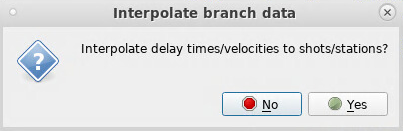
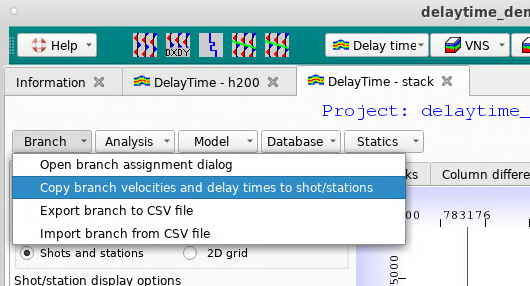
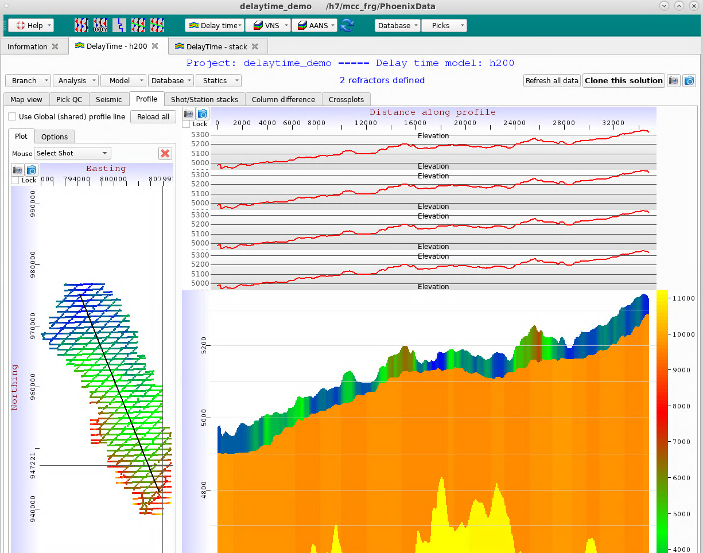

Home | Phoenix | DeepTrace | Company
Home | Phoenix | DeepTrace | Company
Each Delay Time solution is saved in its own Model. You may have any number of Delay Time Models in your Merge.
To create a Delay Time Model, first open the Merge Manager for your project:
Click the “DT” button on the Navigation Bar along the top of the Merge Manager Window, and select “Create new delay time solution model”. A dialog will appear. You may need to resize it if the text columns are not fully visible on your desktop resolution.
Provide a name for the Model. In general, we recommend that Model names be descriptive of grid parameters.
The angle may be set by clicking and dragging a line in the basemap portion on the right-hand side.
Set desired horizontal grid spacing. This spacing is used for interpolation functions within Delay Time Analysis.
Set water velocity. Note - the default is set for feet. If you are using meters, make sure to change this value or your water velocity will be far too fast.
Clicking the “Apply options” button will update the basemap, angle, and the inline and crossline node count in the “Model description” section.
Click the “OK” button to create the new Model.
Once the Model has been created, it will appear under the dropdown menu when you click the “DT” button on the Navigation Bar of the Merge Manager window:
To open an exiting Model from the Merge Manager window, click the “DT” button on the Navigation Bar, then select the model:
The Delay Time Model window will appear. A popup suggestion box may appear; you may follow these suggestions or disable them if you wish.
To open the Branch Assignment dialog, either click the button in the suggestion box or click the “Branch” button in the top left corner of the Delay Time Model window, and select the first option from the dropdown:
The Branch Assignment dialog will appear. Click a location on the basemap in the lower left to bring up a gather (note that the default selection is a shot gather):
If you wish to view traces with picks overlaid in this window, check the “Show seismic data, if available” box in the top left corner. This is also necessary if you do not yet have picks.
The axis locks may be used to lock the display window to a more useful range. The “X range” locks the offset axis and the “Y range” locks the time axis. This should be used in conjunction with a linear moveout to focus the image.
This option applies a linear moveout to the picks/seismic. We highly recommend that you use this. The refractor velocity of each Branch can be approximated by shifting the moveout velocity until the Branch picks are horizontal on the display - the moveout velocity that does this is the approximate refractor velocity of that branch.
The “Minimum location separation” value sets the minimum spacing between Branch Assignment locations on the basemap.
To delete a defined location, mouse over the location on the basemap and press the “D” key.
The interpolation scalar should be treated like a smoothing radius - a larger value will cause effects to be smeared out more.
You may choose between inverse square and inverse fourth weighting - inverse square is slightly faster but inverse fourth is slightly more accurate.
Any pick version may be displayed in this window, and used for defining Branches.
Delay times may be applied to the data. This should not be used when defining Branches for the first time.
To switch between Branches, use the number keys on your keyboard (i.e. the “1” key for Branch 1, the “2” key for Branch 2, etc.). The currently selected branch is displayed above the trace/pick display.
To assign the currently selected Branch at the currently selected location, click and drag the mouse cursor along the picks or traces in the display. Assign all desired branches at this location, then repeat at other locations.
Once you have assigned all Branches at all desired locations, click the “OK” button to save the Branch Assignment. A suggestion box may appear asking to interpolate delay times and velocities to Shot/Station locations - this must be done before any other steps.

This interpolation option is also accessible from the Delay Time Model Window by clicking the “Branch” button in the upper left and selecting “Copy branch velocities and delay times to shot/stations”:

If you have picks already, you can run Delay Time Analysis. If you do not have picks, you can use the Delay Time Stacks to flatten your trace gathers and create autopicks.
A suggestion box may appear for Delay Time Analysis if requirements are met:
This requires that you have Branches assigned as well as valid picks for those branches. If you are missing either of these, make sure you have them before proceeding.
To run Delay Time Analysis, either use the popup suggestion window, or click the “Analysis” button in the upper left and select one of the Delay Time Analysis options.
There are two options for Delay Time Analysis - grid-based and non-grid-based. Please note - all default options in the Delay Time Analysis dialogs are the recommended options.
This uses a regular grid rather than simply using the Shot and Station locations. This method produces more accurate results and should be used when anisotropy is suspected in the survey.
When this method is selected, the following dialog will appear:
Phoenix defines the Delay Time Analysis smoothing radius as a percentage of the max branch offset - this creates more physical results. The default value for gridded analysis is 30%, as opposed to the default of 100% for the non-gridded version - this is because the gridded version results in a higher-resolution model, and thus should be smoothed less in order to preserve the finer details.
Please remember to change your water velocity if using meters.
You may exclude Branch locations for being too far away from a Shot or Station.
Velocity dynamic range compression keeps refractor velocities realistic and physical, and prevents massive jumps in velocity that sometimes occur in Delay Time Analysis. The default for gridded analysis is to use nonlinear compression.
This is a more traditional Delay Time update.
When this method is selected, the following dialog will appear:
This is a faster update that uses the Shot and Station locations rather than a regular grid.
Phoenix defines the Delay Time Analysis smoothing radius as a percentage of the max branch offset - this creates more physical results. The default value for nongridded analysis is 100%.
Please remember to change your water velocity if using meters.
You may exclude Branch locations for being too far away from a Shot or Station.
Velocity dynamic range compression keeps refractor velocities realistic and physical, and prevents massive jumps in velocity that sometimes occur in Delay Time Analysis. The default for nongridded analysis is to use linear compression.
After the Delay Time job is launched, it will appear in the Job Monitor portion of the Phoenix Main Window:
The status will update to “Finished” when the job is complete.
Once the Delay Time job is finished, a suggestion box may appear, asking you to compute the model.
To compute a model, you may either select one of the options in this suggestion box, or from the Delay Time Window, you may click the “Model” button and select one of the model computation options there.
To use this option, specify the weathering velocity in the dialog:
To use this option, set the desired average depth and smoothing radius for the Refractor, as well as the weathering velocity span. These last two percentages control the allowed range for the weathering velocity.
The Delay Time Model tracks its update history in the bottom left corner of the window:
To create, view, and pick Delay Time Stacks, click on the “Shot/station stacks” tab in the Delay Time Window:
Phoenix allows you to have any number of different Stacks for each Model. These appear in the dropdown menu. To create a new Stack, click the “New stack” button. A dialog will appear:
Name the Stacks, and set the time window. Larger surveys will benefit from using multiple threads per dataset. Please note, the Delay Time solution shifts will be added automatically - only signal processing objects should be added to the flow, as in the example. Click “OK” to create the Stacks.
The Stack creation job will also appear in the Phoenix Main Window Job Monitor:
Once Stack creation is complete, the Stack Window should automatically reload. The Stacks may then be picked.

Set the grouping method - this usually means grouping by count for Shots and grouping by line number for Stations.
Once the stack picks have been made, the “Pick status” bar will reflect that picks have been modified - they must be saved manually. Click the “Save picks” button to do this.
To re-stack, simply create a new Stack. As long as the picks have been saved, the Delay Time solution will have been updated, and these changes will be in the new Stack.
To view Delay Time Model Profiles, click on the “Profiles” tab in the Delay Time Model Window:

Before computing Statics, the intermediate and final datums must be set.
Click the “Statics” near the top middle of the Delay Time Model Window to set datums and compute statics.
[]Resources/DelayTime/phx-dt-25intermediatedatummenu.png)
There are 3 options for setting the intermediate datum: flat, database column, and import from other project.
To set a flat datum, specify the elevation of the intermediate datum. This should be just below the bottom of the lowest refractor.
To set a datum based on a database column (such as a Refractor surface), select the column, set the smoothing radius, and set the vertical shift. To use a Refractor surface, use the corresponding “Elevation_#” column, where # is the Refractor number.
To set a datum using another project, select the project, Delay Time Model, and database column.
The options for setting the final datum are the same as those above for the intermediate datum.
Select “Compute statics” from the Statics menu. A dialog will appear:
Name the Statics, set the Replacement Velocity, then set Statics Tie options, if desired. Statics Tie will shift these Statics such that the mean value is equal to the mean value of the reference Statics.
Phoenix exports all Statics at once. Simply select “Export statics” from the Statics menu and the program will provide the export location: